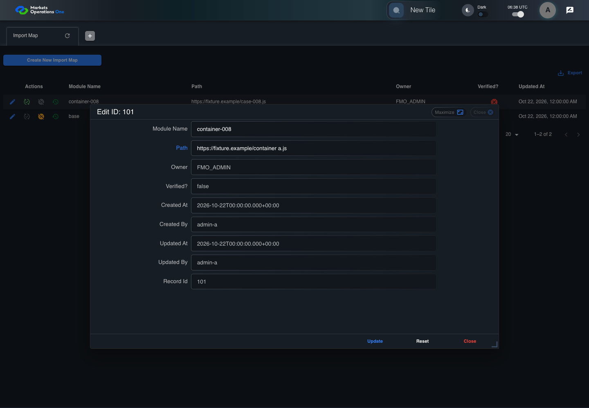

BFF-ADM-008 current BFF administration through actual UI
PASS · application/run-072/bff-adm-008-current-bff-administration-through-actual-ui-130716d3aa07-attempt-1 · ACTUAL_APPLICATION_LOCAL_SERVICES
Actual current React and exact-current BFF admin controllers/services/JPA with actual migration DDL in disposable PostgreSQL. Controlled OUD/EMS2 identities and local Spring bootstrap. Fixture SQL seeds/mutates isolated records; service errors are actual database errors. Undefined agreed messages remain unresolved acceptance.
2026-10-22T06:38:58.364Z to 2026-10-22T06:39:02.131Z
Assertions and result · Artifact manifest · Exact run inputs and source hashes
Result SHA-256:b4f5681dd4ead9a20de2c20f2ff52e7b5549fa00e7cbe67b3ad36a5e8947e223Machine observations
- actual-identity-projection.json
5e68c192f38e8f3257dc55f5646eb5202f00dd2156fe767d8765c9dcef7721eb - baseline-inputs.json
92cacd7d41fbeaa39b3d6482ec25663bf8c40fb502dd57f7568f75c2c0c18811 - bff-boundary.json
422742a255b2815b927df5e4d07a8acf38ce52c6407203804928ef66de3827e5 - committed-ui-submission-comparisons.json
cafaf376ee5ec543c077685b1b4512faddc5a2c200e1de3ed5688b96fb53338d - fixture-step-4.json
23e3a469287390383effcae638b49525ec2f680f75fa0884b0dbe380a13aabb0 - fixture-step-5.json
a7fd34925499504240412f4f6553847f47f32d49e5e58675264a7e700e53863f - initial-persisted-records.json
a156337ec317e664c3f43dd9f872d2b709f30302c872245a76dcf9e7a6b15b33 - persisted-after-submit.json
04c4357e3867c1591efbd7fa4e3a8be452cee7482379e3573473e37445884fe2 - ui-origin-bff-requests.json
a903758448a53fe2489b1ab1a9d9aac78888d39b0f45a283d9c8f86f2de52c8d
Screenshot capture: CAPTURED. Named frames: 14.
Step screenshot bindings: COMPLETE. 13/13 canonical steps have execution screenshots.
Bindings measure structural coverage only. They do not establish screenshot content quality or relevance.
Screenshot content review: NOT_REVIEWED. Recorded context: 0/14 frames. Identical image bytes: 6 repeated frames. Recorded context does not establish human visual review.
Canonical step timeline
Given Admin A uses subject "admin-a" with role "FMO_ADMIN" in an isolated authenticated browser
Execution: PASSED.1. step-01 Visible state after step 1: Given Admin A uses subject "admin-a" with role "FMO_ADMIN" in an isolated authenticated browser
2026-10-22T06:38:59.959Z · 1440×1000
Step: /Users/lushevol/code/github/ratan-release-impact/workbench/tasks/ui-test-coverage-20261022/test-cases.md:14927
SHA-256:df6857e145b4b14910d73e49096c0f46ed785da3993ea8665c7f6f59c7e62e4bAnd the controlled Import Map fixture records the initial grid rows and persisted values
Execution: PASSED.
2. step-02 Visible state after step 2: And the controlled Import Map fixture records the initial grid rows and persisted values
2026-10-22T06:39:00.074Z · 1440×1000
Step: /Users/lushevol/code/github/ratan-release-impact/workbench/tasks/ui-test-coverage-20261022/test-cases.md:14928
SHA-256:df6857e145b4b14910d73e49096c0f46ed785da3993ea8665c7f6f59c7e62e4bImage bytes match frame 1. An unchanged image can be valid for consecutive assertions. This match does not establish correct step content.
And the Import Map grid has record "101" owned by "FMO_ADMIN"
Execution: PASSED.
3. step-03 Visible state after step 3: And the Import Map grid has record "101" owned by "FMO_ADMIN"
2026-10-22T06:39:00.124Z · 1440×1000
Step: /Users/lushevol/code/github/ratan-release-impact/workbench/tasks/ui-test-coverage-20261022/test-cases.md:14929
SHA-256:df6857e145b4b14910d73e49096c0f46ed785da3993ea8665c7f6f59c7e62e4bImage bytes match frame 2. An unchanged image can be valid for consecutive assertions. This match does not establish correct step content.
And the baseline fixture data defines "Module Name" as "container-008"
Execution: PASSED.
4. step-04 Visible state after step 4: And the baseline fixture data defines "Module Name" as "container-008"
2026-10-22T06:39:00.172Z · 1440×1000
Step: /Users/lushevol/code/github/ratan-release-impact/workbench/tasks/ui-test-coverage-20261022/test-cases.md:14930
SHA-256:df6857e145b4b14910d73e49096c0f46ed785da3993ea8665c7f6f59c7e62e4bImage bytes match frame 3. An unchanged image can be valid for consecutive assertions. This match does not establish correct step content.
And the baseline fixture data defines "Path" as "https://fixture.example/case-008.js"
Execution: PASSED.5. step-05 Visible state after step 5: And the baseline fixture data defines "Path" as "https://fixture.example/case-008.js"
2026-10-22T06:39:00.222Z · 1440×1000
Step: /Users/lushevol/code/github/ratan-release-impact/workbench/tasks/ui-test-coverage-20261022/test-cases.md:14931
SHA-256:57c6c41d80510f4ca9abc05560ce37706629c0e94bd884fcb57da6c3f4779f35When Admin A clicks the button labeled "Edit" in the Import Map grid row with "Record Id" "101"
Execution: PASSED.6. step-06 Visible state after step 6: When Admin A clicks the button labeled "Edit" in the Import Map grid row with "Record Id" "101"
2026-10-22T06:39:00.461Z · 1440×1000
Step: /Users/lushevol/code/github/ratan-release-impact/workbench/tasks/ui-test-coverage-20261022/test-cases.md:14932
SHA-256:0097b46e53cd25a22cb15226ecb25801db8c69fd2d47649c54742a74b4d7d7a2Then the dialog titled "edit ID: 101" is visible on the Import Map administration page
Execution: PASSED.7. step-07 Visible state after step 7: Then the dialog titled "edit ID: 101" is visible on the Import Map administration page
2026-10-22T06:39:00.512Z · 1440×1000
Step: /Users/lushevol/code/github/ratan-release-impact/workbench/tasks/ui-test-coverage-20261022/test-cases.md:14933
SHA-256:93c06e484dc8bf0ded7a3f79d4891319b73955bced03d2166ffb166afe7847fbWhen Admin A fills the textbox labeled "Module Name" with "container-008" in dialog "edit ID: 101"
Execution: PASSED.8. step-08 Visible state after step 8: When Admin A fills the textbox labeled "Module Name" with "container-008" in dialog "edit ID: 101"
2026-10-22T06:39:00.943Z · 1440×1000
Step: /Users/lushevol/code/github/ratan-release-impact/workbench/tasks/ui-test-coverage-20261022/test-cases.md:14934
SHA-256:94382417ce4dcd745196fae636e3f4f3c980e51d84cbb7e05feec4cdf9802a67And Admin A fills the textbox labeled "Path" with "https://fixture.example/container a.js" in dialog "edit ID: 101"
Execution: PASSED.
9. step-09 Visible state after step 9: And Admin A fills the textbox labeled "Path" with "https://fixture.example/container a.js" in dialog "edit ID: 101"
2026-10-22T06:39:01.345Z · 1440×1000
Step: /Users/lushevol/code/github/ratan-release-impact/workbench/tasks/ui-test-coverage-20261022/test-cases.md:14935
SHA-256:da4de82cc6645d7dddf104aeb01817c8002973e5aada82de1cc6743e15868528And Admin A clicks the button labeled "Update" in dialog "edit ID: 101"
Execution: PASSED.10. step-10 Visible state after step 10: And Admin A clicks the button labeled "Update" in dialog "edit ID: 101"
2026-10-22T06:39:01.587Z · 1440×1000
Step: /Users/lushevol/code/github/ratan-release-impact/workbench/tasks/ui-test-coverage-20261022/test-cases.md:14936
SHA-256:e4828ab974f4f4d254f0e094730e2a3181287b720f0aff5ba85e938020e6ebc4Then the dialog titled "edit ID: 101" remains visible on the Import Map administration page
Execution: PASSED.11. step-11 Visible state after step 11: Then the dialog titled "edit ID: 101" remains visible on the Import Map administration page
2026-10-22T06:39:01.644Z · 1440×1000
Step: /Users/lushevol/code/github/ratan-release-impact/workbench/tasks/ui-test-coverage-20261022/test-cases.md:14937
SHA-256:ba02ddb9478c80ffef48762418b9ab8906d4bea8b8bc6c73dfd58f1c95766661And the alert with severity "error" in the portal snackbar contains the exact text "You should not enter any space character on the Module Name or Path."
Execution: PASSED.
12. step-12 Visible state after step 12: And the alert with severity "error" in the portal snackbar contains the exact text "You should not enter any space character on the Module Name or Path."
2026-10-22T06:39:01.710Z · 1440×1000
Step: /Users/lushevol/code/github/ratan-release-impact/workbench/tasks/ui-test-coverage-20261022/test-cases.md:14938
SHA-256:ba02ddb9478c80ffef48762418b9ab8906d4bea8b8bc6c73dfd58f1c95766661Image bytes match frame 11. An unchanged image can be valid for consecutive assertions. This match does not establish correct step content.
And the Import Map data grid with column "Record Id" row identifiers and loaded field values equal the initial grid snapshot on the Import Map administration page
Execution: PASSED.
13. step-13 Visible state after step 13: And the Import Map data grid with column "Record Id" row identifiers and loaded field values equal the initial grid snapshot on the Import Map administration page
2026-10-22T06:39:01.812Z · 1440×1000
Step: /Users/lushevol/code/github/ratan-release-impact/workbench/tasks/ui-test-coverage-20261022/test-cases.md:14939
SHA-256:ba02ddb9478c80ffef48762418b9ab8906d4bea8b8bc6c73dfd58f1c95766661Image bytes match frame 12. An unchanged image can be valid for consecutive assertions. This match does not establish correct step content.
Additional named frames

The final visible state after the named test assertions.
2026-10-22T06:39:01.883Z · 1440×1000Step: Test source: /Users/lushevol/code/github/ratan-release-impact/workbench/e2e/audit-specs/bff-admin.spec.ts:11
SHA-256:
ba02ddb9478c80ffef48762418b9ab8906d4bea8b8bc6c73dfd58f1c95766661Image bytes match frame 13. An unchanged image can be valid for consecutive assertions. This match does not establish correct step content.
Screenshots establish visible state only. Assertions and traces support functional claims.